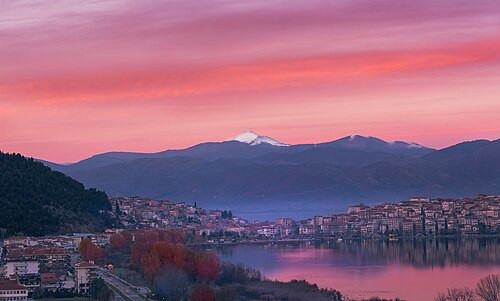

Kastoria

3 Fun Facts About Kastoria
- A city surrounded by a lake: Kastoria is built on a narrow peninsula reaching into Lake Orestiada, giving the city its famous waterfront views.
- A fashionable past: Kastoria was a major center for the fur trade, and its wealth helped create the beautiful old mansions in the Doltso neighborhood.
- A paradise for birds: More than 200 bird species can be found around the lake and its surrounding habitats.